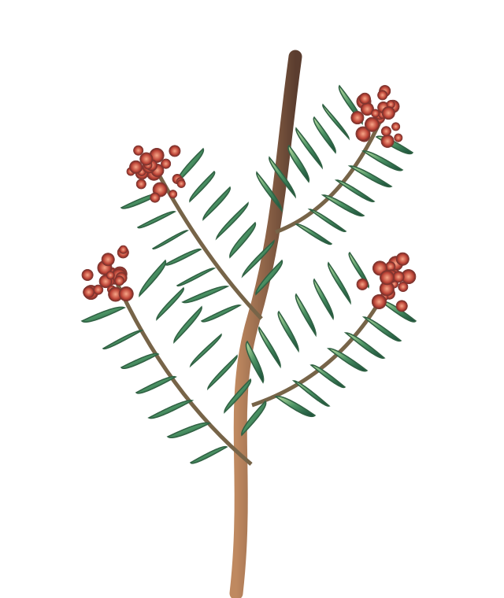
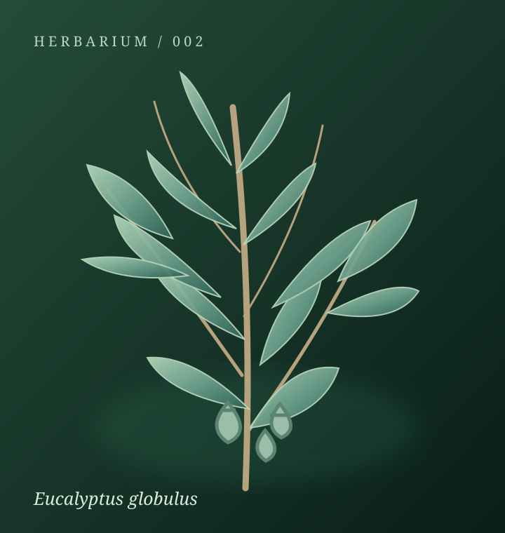

Uma coleção de vida.
Um espaço para registrar, investigar e apresentar as plantas identificadas ao longo do PIBIC Jr. Explore as espécies em diferentes visualizações e abra seus dossiês interativos.
ACERVO / IDENTIFICAÇÃO
Espécies do projeto .

ESPÉCIE 001Aroeira
Schinus terebinthifolia Raddi IDENTIFICAÇÃO A CONFIRMAR

ESPÉCIE 002Eucalipto
Eucalyptus globulus Labill. ESPÉCIE A CONFIRMAR
Nenhuma planta encontrada
Tente pesquisar por “Eucalipto”, “Aroeira” ou nome científico.
✳ Acervo experimental com duas espécies-modelo. A identificação das plantas deve ser confirmada pela equipe; as informações sobre uso popular são registros etnobotânicos, não recomendações de tratamento.